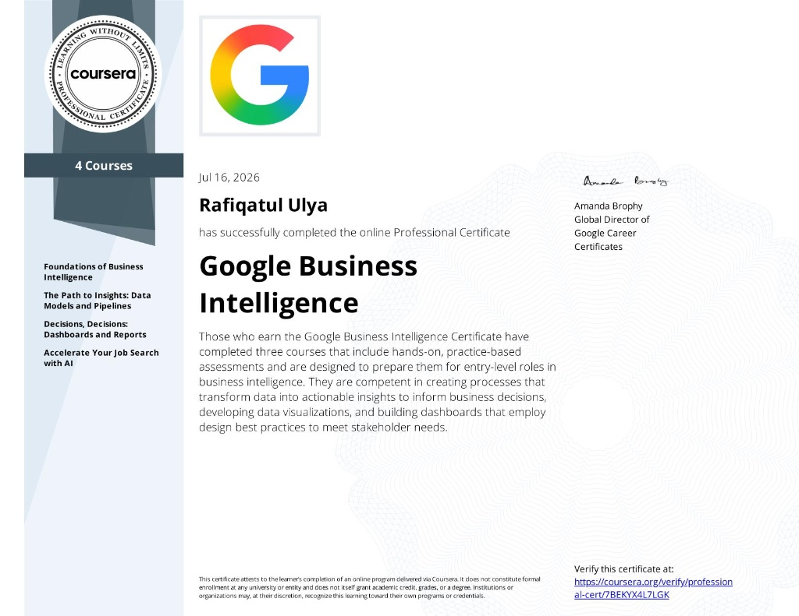
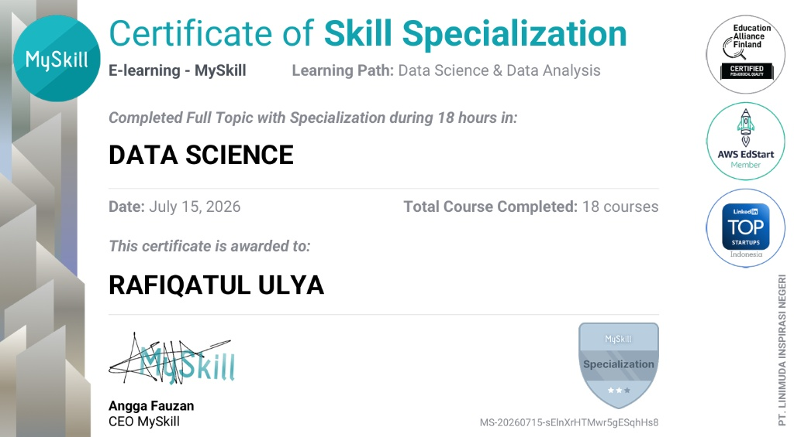

My
Business Analyst &
Tech Delivery
PortFolio
Rafiqatul Ulya
rafiqatululya30@gmail.com

Business Analyst &
Tech Delivery
rafiqatululya30@gmail.com

As an Information Systems graduate, I bridge business analysis, design, and development to create intuitive digital products, web solutions, and analytical dashboards. I’m passionate about transforming complex requirements into practical, user-centered solutions that create real business impact.
Bachelor of Information Systems
Graduated with Honors
Translating complex business needs into effective, testable, and data-informed digital technology solutions.
Translating stakeholder requirements into documented, testable digital solutions. Expertise in BRD creation and system testing.
Querying and analyzing structured data using SQL/SPARQL. Building interactive dashboards (Power BI) to support decision making.
Prototyping user-centered interfaces via Figma. Implementing solutions utilizing Python, PHP, and modern web frameworks.
Freelance Web Solution Projects
Jan.2025 - Present
Gathering business requirements and designing digital interfaces and functional web platforms for various client needs.
Wikidata Program | Wikimedia Indonesia
Sep.2024 - Jan.2025
Managed technical documentation, analyzed structured datasets using SPARQL, and supported Wikidata training to enhance knowledge management and data accessibility.
BPKP West Sumatra Representative
Jan.2024 - Feb.2024
Gathered stakeholder reporting requirements and developed a centralized reporting portal integrating Power BI dashboards and organizational resources using Google Sites.
Designed and developed a responsive B2B company profile website to enhance corporate identity and centralize business information.
Designed a modern marketplace platform to simplify class booking. Delivered high-fidelity Figma prototypes and mapped user journeys for seamless development.
Developed a centralized internal portal using Google Sites to streamline access to organizational systems, resources, and reporting dashboards.
Led system analysis and UI design for a secure, military-grade messaging ecosystem, including complete data architecture planning.
Prototyped a real-time IoT monitoring dashboard integrating GPS tracking, video feeds, and safety analytics to accelerate emergency response.
Built predictive regression models and an interactive Power BI dashboard to monitor financial performance and support proactive business decisions.
Professional validations of my skills and knowledge.
Applied Skills Certificate
Demonstrated ability to implement real-time intelligence solutions and process data streams utilizing Microsoft Fabric.

Professional Certificate
Mastered foundational BI concepts, data models, pipelines, and dashboard creation to transform raw data into actionable business insights.

MySkill Specialization
Completed 18 comprehensive courses covering the full spectrum of Data Science, from data preparation to advanced analytical modeling.

Professional Certificate
8 Courses covering UX research, Figma prototyping, and user testing. Demonstrated ability to empathize with users and build functional interfaces.

MySkill Specialization
Advanced data science, SQL querying, and business visualization techniques. Proven ability to translate raw data into actionable business insights.

CodePolitan
Foundational logic and algorithmic problem solving. Strengthened logical thinking for developing efficient software and technology solutions.
Open for full-time opportunities in Business Analysis, Product Management, and Data Analytics, as well as tech delivery projects. Let's build something great together.